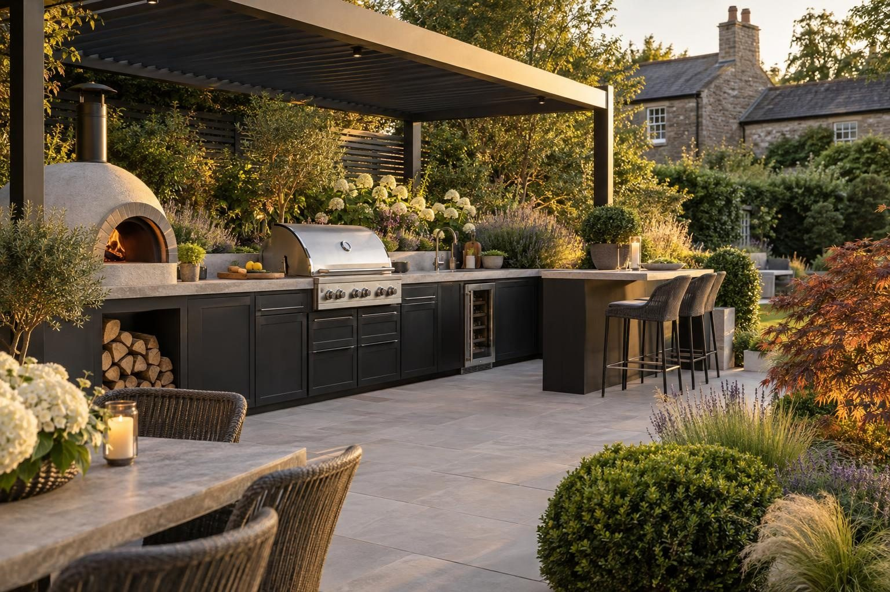

Outdoor kitchens in Corby
Outdoor kitchens across Corby, from New Town estates to Priors Hall Park, with bases dug for whatever lies under the lawn.
A built-in outdoor kitchen in Corby with cabinets, worktop and appliance space starts from about £6,000, and a fully equipped Corby kitchen with grill, pizza oven, sink and fridge is typically £8,000–£20,000, plus gas, power and water connections priced on top. Corby's main consideration is the ground: natural ironstone, clay and restored quarry fill can all appear within one garden.
- Fully equipped
- £8,000–£20,000
- Planning
- Not normally needed
- Ground
- Ironstone, with clay and restored ground
- Guarantee
- 5 years, in writing
Our 2026 guide prices. Your fixed price comes in writing after the site visit. Full breakdown: outdoor kitchens cost guide.
Outdoor kitchens in Corby
Corby was built on ironstone, and much of the land around it was opencast quarried and restored. That history is still under the gardens. A kitchen base that sits happily on natural rock at one end can be on soft fill at the other, so we dig before we design. Above that base go block or stone-faced counters with weatherproof worktops, and space planned in for the grill, pizza oven, sink and fridge.
Our prices start as guides and become a fixed figure in writing after the visit, once the ground, access and service runs are known. We work across the New Town estates, including Kingswood, Lodge Park, Beanfield and Danesholme, on the new streets of Priors Hall Park, and in the older villages of Weldon, Great Oakley, Corby Village, Gretton, Cottingham, Middleton, Rockingham, Stanion and East Carlton, as well as in Kettering, Uppingham and Market Harborough.
What makes Corby different
Gardens at Priors Hall Park are often handed over as bare, compacted plots, which can look firm but hide variable fill. On the older New Town estates the ground has had decades to settle, but it can still change from ironstone to clay within a few metres. A kitchen is heavy and rigid, so uneven support shows up as cracked worktops or doors that no longer close. Properties near the Willow Brook need drainage planned with care as well.
On a post-war semi in Lodge Park or Beanfield, gardens are usually a decent rectangle, and an L-shaped kitchen with a grill, sink and fridge against the back fence fits well. At Priors Hall Park, the plot is often a blank canvas, so the kitchen is planned with a new patio and lawn as one layout, starting from bare compacted ground.
Sources: North Northamptonshire conservation areas · Priors Hall Park.
Permissions in Corby
- PlanningAn outdoor kitchen in a rear garden does not normally need planning permission. A roof or pergola over it has to meet the outbuilding height and size limits. Gas work must be done by a Gas Safe engineer, and new outdoor circuits are notifiable electrical work. Listed buildings and the Corby conservation area have tighter rules, so we check your address before anything is designed. Planning Portal: outbuildings
- TreesTrees in a conservation area need six weeks' notice before work, and protected trees need consent; both are free. North Northamptonshire: tree protection
- Design and priceWe measure up, check the ground and the planning position, and give you one fixed written price.
Rules checked October 2026.
What you get in Corby
- Ground dug and checked for ironstone, clay or restored fill
- New-build plots at Priors Hall Park planned as a whole garden
- Drainage given extra thought near the Willow Brook
- Built on a concrete base, not on the patio slabs
- Weatherproof worktops and stone or rendered faces to match the garden
- Grill, pizza oven, sink and fridge planned in from the start
The specification
- Base dug and concrete slab laid
- Ducts for gas, power and water run in before paving
- Blockwork carcass built and faced
- Worktops, doors and appliances fitted
- Services connected and certified
- Five year workmanship guarantee in writing

Rated 5.0 from 37 Google reviews
“Had my garden done by the lads at Rutland driveways and landscaping I’m very pleased with the outcome also I booked to get my sisters driveway repaired by the guys would 100% recommend.”
Connor, Corby · Porcelain patio — Google review
“Rutland Driveway Team replaced our back garden fencing and patio in Corby. Price was competitive and the team were polite, friendly and punctual, they kept us informed every step of the process, would highly recommend.”
Helen, Corby · Fencing and patio — Google review
Everything else we do here


Outdoor kitchens in Corby: questions
What does an outdoor kitchen cost in Corby?
Do I need planning for an outdoor kitchen in Corby?
My Priors Hall garden is just compacted soil. Can you start from there?
Why do some outdoor kitchens crack after a year or two?
Request a site visit in Corby
We measure up, check levels and drainage, and send a written proposal with the build-up, the programme and one whole price. No pressure and no follow-up sales calls.